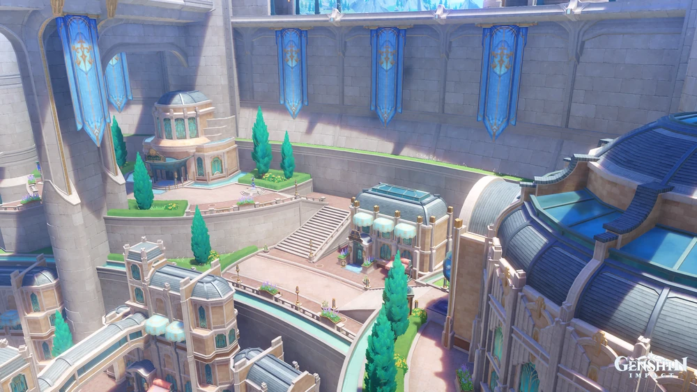

Fontaine
El origen de toda agua se halla en el centro de Teyvat.
Sigue el transcurso del agua, atraviesa la frondosa naturaleza, los densos bosques y el mar de arena y finalmente llegarás a la cuna y el origen de todas las aguas del continente. En lo más alto de las cascadas y en la metrópoli marina que se yergue sobre las planicies, historias nunca oídas y leyendas tiempo atrás olvidadas, como si de una nación sepultada en lo más profundo de las aguas se trataran, anhelan fervientemente la llegada de algún visitante. es la Quinta Nación de las siete regiones de Teyvat. Es la nación que rinde culto a Foçalors, la Arconte Hydro.
La Corte de Fontaine es una subárea y la ciudad principal de Fontaine, ubicada en el Condado de la Corte de Fontaine.
Era el tribunal de Foçalors, la diosa de la justicia, establecido hace al menos mil años. Después de los acontecimientos de Mascarada de los culpables, el tribunal ahora está bajo la competencia del Juez supremo Neuvillette.
La ciudad también es la base de «El Pájaro de Vapor», un periódico que se lee en todo Teyvat.
El Palacio Mermonia está situado en la parte noroeste de la Corte de Fontaine y tiene su propia Estatua de los Siete.
Se encuentra en la parte inferior de la ciudad y consta de varias tiendas a lo largo de calles que conducen hacia una gran fuente.
Está ubicado en el lado suroeste de la ciudad y alberga a el «El Pájaro de Vapor» y el Bistró Debord. También se considera un lugar para encontrar la última moda y perfumes.

Central Acuavial está ubicado en el centro de la Corte de Fontaine y contiene la estación principal del Ferribús, junto al Río Cenicienton Se encuentra bajo tierra de la Corte de Fontaine.
Proximamente...
Proximamente...
Más detalles
Ciudad de Fontaine

Palacio Mermonia
Galería Vasari
Distrito Narbonais
Central Acuavial de la Corte de Fontaine
Lugares Icónicos e ¿Historia?
Musica, Personajes, Dominios, Jefes y artefactos